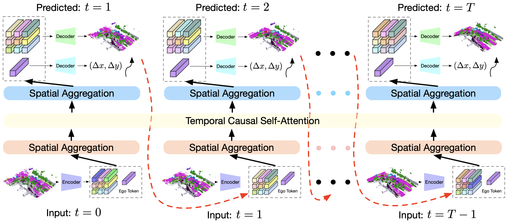
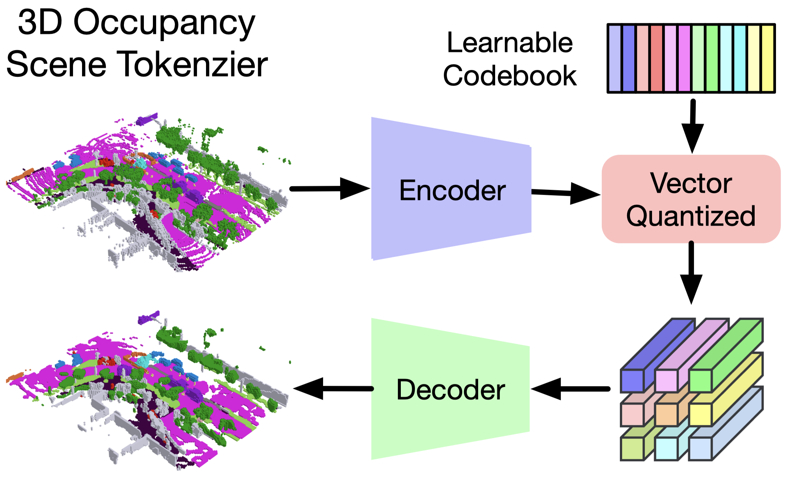
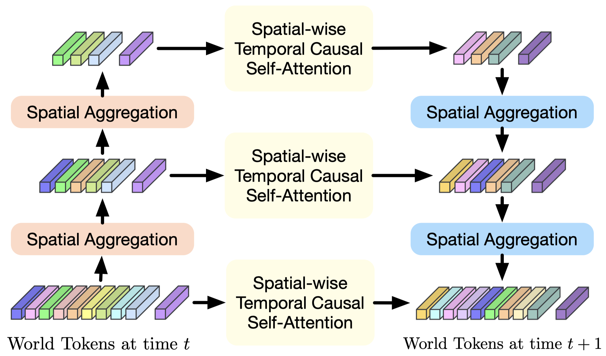
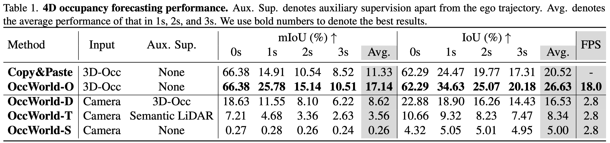

Overview of our contributions. Given past 3D occupancy observations, our self-supervised OccWorld trained can forecast future scene evolutions and ego movements jointly. This task requires a spatial understanding of the 3D scene and temporal modeling of how driving scenarios develop. We observe that OccWorld can successfully forecast the movements of surrounding agents and future map elements such as drivable areas. OccWorld even generates more reasonable drivable areas than the ground truth, demonstrating its ability to understand the scene rather than memorizing training data. Still, it fails to forecast new vehicles entering the sight, which is difficult given their absence in the inputs.
OccWorld: a 3D Occupancy World Model
We adopt a GPT-like generative architecture to predict the next scene from previous scenes in an autoregressive manner.

We adapt GPT to the autonomous driving scenario with two key designs: 1) We train a 3D occupancy scene tokenizer to produce discrete high-level representations of the 3D scene; 2) We perform spatial mixing before and after spatial-wise temporal causal self-attention to efficiently produce globally consistent scene predictions. We use ground-truth and predicted scene tokens as inputs for future generations for training and inference, respectively.3D Occupancy Scene Tokenizer
As the world model operates on the scene representation, its choice is vital to the performance of the world model. We select it based on three principles: 1) expressiveness. It should be able to comprehensively contain the 3D structural and semantic information of the 3D scene; 2) efficiency. It should be economical to learn (e.g., from weak supervision or self-supervision); 3) versatility. It should be able to adapt to both vision and LiDAR modalities.

We use CNNs to encode the 3D occupancy and perform vector quantization to obtain discrete tokens using a learnable codebook. We then employ a decoder to reconstruct the input 3D occupancy using the quantized tokens and use a reconstruction objective to train the autoencoder and codebook simultaneously.
Spatial-Temporal Generative Transformer
Inspired by the remarkable sequential prediction performance of GPT, we adopt a GPT-like autoregressive transformer architecture to instantiate OccWorld. Both the spatial relations of world tokens within each time stamp and the temporal relations of tokens across different time stamps should be considered to comprehensively model the world evolution. Therefore, we We adapt the GPT and propose a spatial-temporal generative transformer architecture to effectively process past world tokens and make predictions of the next future.

As each scene is composed of numerous world tokens, we adopt spatial mixing modules to model their intrinsic dependencies and obtain multi-scale world tokens to capture multi-level information. We then perform spatial-wise temporal causal self-attention at each level to forecast the next scene. We employ a U-net structure to aggregate the multi-scale predictions.Results
We conduct two tasks to evaluate our OccWorld: 4D occupancy forecasting on the Occ3D dataset and motion planning on the nuScenes dataset.
4D Occupancy Forecasting
3D occupancy prediction aims to reconstruct the semantic occupancy for each voxel in the surrounding space, which cannot capture the temporal evolution of the 3D occupancy. In this work, we explore the task of 4D occupancy forecasting, which aims to forecast the future 3D occupancy given a few historical occupancy inputs.
We evaluated our OccWorld in several settings: OccWorld-O (using ground-truth 3D occupancy), OccWorld-D (using predicted results of TPVFormer trained with dense ground-truth 3D occupancy), OccWorld-T (using predicted results of TPVFormer trained with sparse semantic LiDAR), and OccWorld-S (using predicted results of SelfOcc trained in a self-supervised manner).

We observe that OccWorld-O can generate non-trivial future 3D occupancy with much better results than Copy&Paste, showing that our model learns the underlying scene evolution. OccWorld-D, OccWorld-T, and OccWorld-S can be seen as end-to-end vision-based 4D occupancy forecasting methods as they take surrounding images as input. This task is very challenging since it requires both 3D structure reconstruction and forecasting. It is especially difficult for the self-supervised OccWorld-S, which exploits no 3D occupancy information even during training. Still, our OccWorld generates future 3D occupancy with non-trivial mIoU and IoU on the end-to-end setting.
Motion Planning
We compare the motion planning performance of our OccWorld with various settings with state-of-the-art end-to-end autonomous driving methods.

Despite the strong performance of UniAD, the additional annotations in the 3D space are very difficult to obtain, making it difficult to scale to large-scale driving data. As an alternative, OccWorld demonstrates competitive performance by employing 3D occupancy as the scene representation which can be efficiently obtained by accumulating LiDAR scans.
Visualizations
We visualize the output results of the our OccWorld with different settings.

We see that our models can successfully forecast the movements of cars and can complete unseen map elements in the inputs such as drivable areas. The planning trajectory is also more accurate with better 4D occupancy forecasting.
Bibtex
@article{zheng2023occworld,
title={OccWorld: Learning a 3D Occupancy World Model for Autonomous Driving},
author={Zheng, Wenzhao and Chen, Weiliang and Huang, Yuanhui and Zhang, Borui and Duan, Yueqi and Lu, Jiwen },
journal={arXiv preprint arXiv:},
year={2023}
}